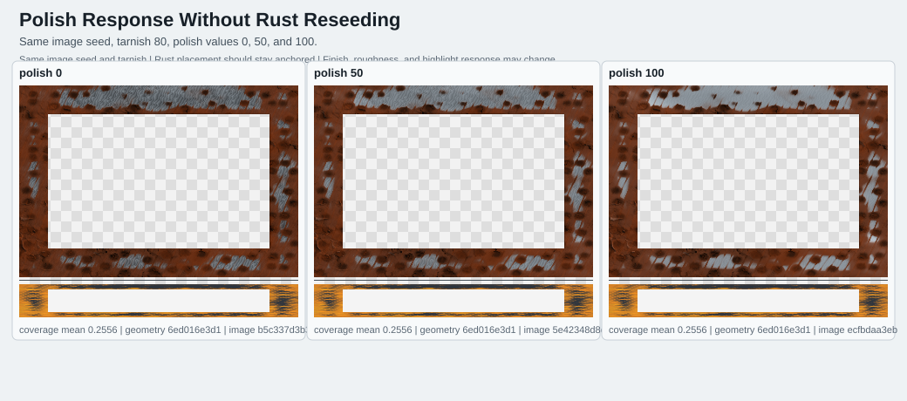
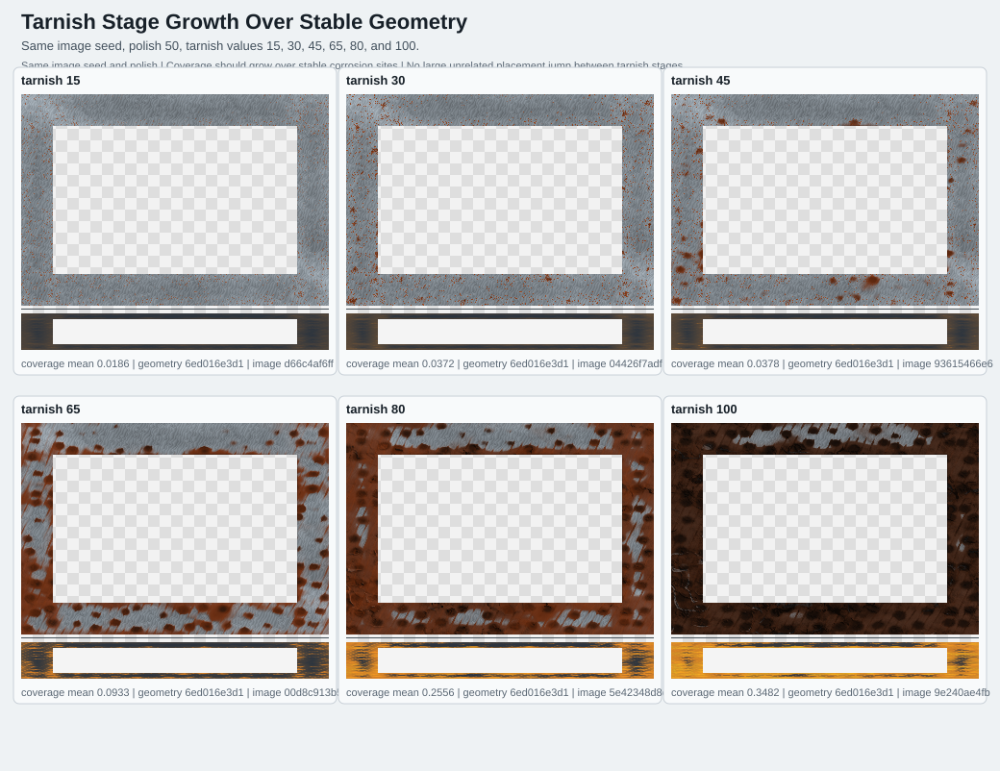
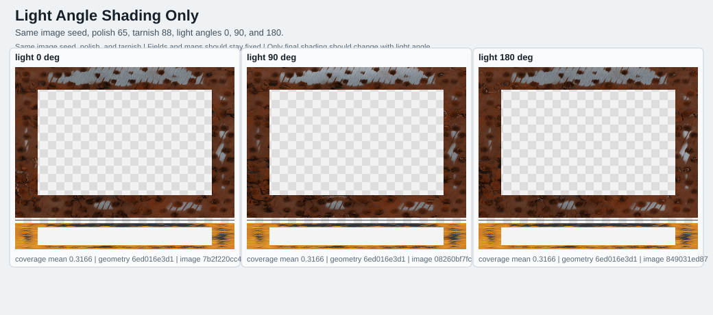
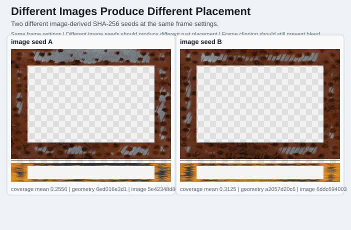

Generated contact sheets for image-derived corrosion seed behavior. PNG sheets are label-free raster companions; SVG sheets include labels and metrics.
Same image seed, tarnish 80, polish values 0, 50, and 100.
C:\Users\John Paul Keller\steam-backup-label-studio\artifacts\seed-uncoupling-visual-verification\package-2026-06-27\sheets\01-polish-0-50-100-same-image.svg

Same image seed, polish 50, tarnish values 15, 30, 45, 65, 80, and 100.
C:\Users\John Paul Keller\steam-backup-label-studio\artifacts\seed-uncoupling-visual-verification\package-2026-06-27\sheets\02-tarnish-15-30-45-65-80-100-same-image.svg

Same image seed, polish 65, tarnish 88, light angles 0, 90, and 180.
C:\Users\John Paul Keller\steam-backup-label-studio\artifacts\seed-uncoupling-visual-verification\package-2026-06-27\sheets\03-light-0-90-180-same-image.svg

Two different image-derived SHA-256 seeds at the same frame settings.
C:\Users\John Paul Keller\steam-backup-label-studio\artifacts\seed-uncoupling-visual-verification\package-2026-06-27\sheets\04-different-images-same-settings.svg
